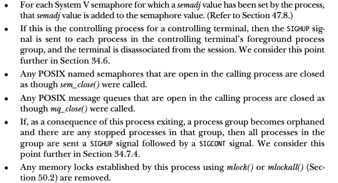

Linux Chapter 24 CreateProcess
Contents
Process Termination
_exit() and exit()
有兩種方式可以終止程式：
- abnormal - 由訊號觸發，預設是終止程式（可以core dump)
- normally - 使用
_exit()終止程式
|
|
- status:定義終止狀態，在parent process可以呼叫
wait()以取得狀態 - 結束狀態為 0 ，表示process順利結束。非0表示異常終止
- 非0狀態沒有固定規則，每個應用程式有自己的規則要參考他們的文件
- 普遍為SUSv3制訂的：
EXIT_SUCCESS(0)EXIT_FAILURE(1)
程式通常不會直接呼叫_exit()，因為會直接終止，通常會呼叫exit()，因為可以在真正呼叫_exit()前執行一些動作
|
|
會進行以下動作：
- 以反向註冊順序，呼叫exit處理常式
- flush stdio的串流緩衝區
- 使用status 提供的值執行
_exit()system call
與在main() 中return 終止程式或執行到main()結尾終止的方式，return n; 等同於 exit(n)
- 不等價的時候：若在exit的過程中有任何步驟存取
main()的區域函數時，從main return會產生不可預期的行為。例如在呼叫setvbuf()或setbuf()時使用main()的區域函數時就會發生不等價的情況
行程終止的動作
- 關閉open file descriptor、directory stream、message catalog descriptor、conversion descriptor
- 關閉open file descriptor 後，會釋放此形成所有的file lock
- 解除任何加載的System V共享記憶體段，並將每個區段對應的
shm_nattchcounter減去1 - 解除行程使用
mmap()建立的記憶體映射 
Exit Handler
在行程終止前執行一些操作，以應用程式的函式庫來說，行程終止前需要清理在生命週期間有用到的函式庫，因此需要exit handler來保證在終止前（結束時）會清理
註冊exit handler
|
|
- func格式如下
void func(void){/*.....*/}
- 可以註冊多個handler
- 在呼叫這些函式時，順序會與註冊時的順序相反
- 若在某個handler呼叫
_exit()或遭到訊號終止，不會繼續呼叫剩餘的handler - 透過fork()的child會繼承parent的exit handler副本
另一個非標準的註冊函數：on_exit()可參考中文版上p.594
範例程式：
|
|
|
|
fork(), stdio緩衝區與_exit()的互動
fork() 與 stdio緩衝區
|
|
- 在terminal 中
1 2 3$ ./fork_stdio_buf Hello world Ciao - 重導向到檔案時
1 2 3 4 5$ ./fork_stdio_buf > a $ cat a Ciao Hello world Hello world
原因:
- stdio緩衝區是在行程的使用者空間記憶體維護，因此在child的這些緩衝區是透過
fork()複製的，當標準輸出被導向終端機時，預設是用"行"作為緩衝單位，結果由printf()寫入的換行結尾字串會立即出現。 - 將標準輸出導向至檔案時，預設是用block作為緩衝單位，在
fork()時，printf()寫入的字串仍然在parent行程的stdio緩衝區，而此字串會被複製到child行程，當parent跟child呼叫exit()兩者會刷新stdio緩衝區的複本，導致重複的輸出。write()直接將資料送進核心緩衝區快取，所以不會透過fork()複製
如何避免：
- 可以在呼叫
fork()之前，先用fflush()刷新stdio緩衝區 - 可用
setvbuf()或setbuf()將stdio串流的緩衝區關閉 - child可以改成呼叫
_exit()，以便不會刷新stdio緩衝區